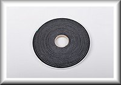

Glass is secured by a 1-piece lead stop on all four sides.
Three sizes to choose from.
Ships with UPS.
Stock #
Window Size (in Inches)
Physical Thickness
Ship Weight
Ship Dimensions
Lead Protection
Your Price
14307
8x10
9mm
7#
17"x18"x5"
2.0mm
$495.00
14315
12x16
7mm
23#
18"x24"x5"
1.6mm
$850.00
14316
16x24
9mm
43#
22"x30"x5"
2.0mm
$1,550.00
Leaded Glass
ALSO AVAILABLE: Hurricane Glass rated for various missile impacts, bullet resistant glass, fire rated
glass and both fire rated and bullet resistant glass.
Call for pricing. Standard X-Ray lead glass pricing below is 5/16" thick, providing 1/16" (4 lb) lead
equivalent shielding value. (Higher shielding ratings available upon request.) X-Ray Safety Glass is
available upon request, labeled to meet impact resistance ANSI Z97.1 and CPSC 16 CFR 1201 Cat 2. X-Ray
Safety Glass is required in any window that occurs within 25" of any door opening, or within 36" from
the floor, per glazing safety codes and regulations.
X-Ray lead glass should be utilized in interior applications only. Scroll down to next section and view
available Telescoping Frame for windows. X-Ray Lead Glass cannot be tempered. It is physically
impossible due to its low melting temperature and surface characteristics. However, X-Ray Lead Glass is
NOT REQUIRED by any safety code to be "tempered". Our X-Ray Safety Glass
meets all current glass safety codes for impact resistance and is permanently labeled accordingly as per
ANSI Z97.1 and CPSC 16 CFR 1201 Cat 2 and IBC 2406 requirements for hazardous locations indoors and this
is particularly applicable in a medical facility environment.
Glass has a refractive index of between 1.76 - 1.79.
Light Transmission approximately 86% - 88%.
Below we show common sizes, prices, and shipping weights for standard 1.6 mm pb equivalent glass with or
without frames.
If your size is not listed here, please e-mail and/or call us with your size and protection level
requirements for a custom quote.
Sizes/pricing shown below ship in 2-3 days at receipt of order. Further, larger sizes that divide
equally by 6 and are 1/16th lead equiv.
also ship in 2-3 working days."Non Stock" larger sizes require 10 working days.All are Non Returnable.
THESE PRODUCTS AND MATERIALS ARE FOR MEDICAL AND INDUSTRIAL APPLICATIONS ONLY. (Not to be utilized for
residential applications.)
Click to Enlarge for clarity details:
Window Size (in Inches)
5/16" Thick 1.6 mm pb Equivalent Standard Lead Glass WITHOUT Frame (Stock # / Your
Price)
5/16" Thick 1.6 mm pb Standard Lead Glass WITH Standard Frame (Stock # / Your
Price)
Fully Boxed/Crated Ship Weights Glass Only / Glass & Frame / Ships VIA
12" X 12"
PNWX-XG12X12 / $Call
PNWX-XG12X12F / $Call
30lbs (13.6kg) / 35lbs (15.9kg) / Ground
12" X 16"
PNWX-XG12X16 / $Call
PNWX-XG12X16F / $Call
40lbs (18.1kg) / 45lbs (20.4kg) / Ground
18" X 18"
PNWX-XG18X18 / $Call
PNWX-XG18X18F / $Call
45lbs (20.4kg) / 60lbs (27.2kg) / Ground
24" X 24"
PNWX-XG24X24 / $Call
PNWX-XG24X24F / $Call
45lbs (23kg) / 60lbs (30kg) / Motor Freight
Stock #
Description
Your Price
XRGT
1x 25' Roll of X-Ray Glazing Tape Highly recommended for Glass purchased without Frame.
$Call
XR-POL
Lead Glass Polishing Kit Reduces hair-line scratches and fogging.
$Call
PCOAT
Powder Coat your frame (Adds 1 week manufacturing time.)
$Call
PNWX-XG6X24SG
6" x 24" Safety Glass for Door (No Frame)
$Call
PNWX-XG6X24SGF
6" x 24" Lead lined Vision Frame with X-Ray Safety Glass to fit 1-3/4" thick door
$Call
X-Ray Glazing Tape.

X-Ray Glazing Tape
Cushions and supports X-Ray Glass.
Not affected by radiation exposure.
Available ready to ship in only 1 day
X-Ray Glass Glazing Tape is 3/8" x 3/8" (0.375" x 0.375") and available in 25' 0" (300") length rolls.
This product is adhesive backed for ease of installation in hollow metal frames and removable stops.
Unlike other glazing tapes, X-Ray Glass Glazing Tape is non-reactive and will not break down when
exposed to radiation.
It provides even cushioned support around the perimeter of the x-ray glass, metal frame, and removable
stop assembly.
This product is highly recommended for all x-ray glass installations when not purchasing our frame.
Stock #
Quantity
Your Price
XRGT
25' (1 Roll)
$Call
Lead Lined Steel Telescopic Window frames.
Sold only with glass- see above. Lead lined telescopic steel frames are fabricated with 16 gauge
Jetcoat,
Hot Dipped Galvanized Steel, electro-galvanized. Paint Lock or Galvannealed with 1/16" (1.58mm) or
5/64"(2.0mm)
standard lead lining (Higher shielding ratings available upon request). These windows are manufactured
for ease of
installation in new rough opening "hole in wall" after lead backed wallboard is installed or in existing
retrofit cut-out applications.
Promptly available in over 40 standard sizes "ready to ship" in just 3 to 4 days, and custom sizes
available in only 10 working days.
Telescopic frames are also available with many other custom designs, profiles or shielding options to
choose from.
THE FRAME
The Lined Telescopic X-Ray Control View Window frame is a modular 2-piece frame that adjusts to wall
thicknesses ranging from a minimum
of 4 1/4" to a maximum of 8". (Custom sizing available, call for options and pricing.) The standard
frame profile will fit into a rough
opening "hole in wall" of 1" larger than the ordered size. For example, a control window frame ordered
as a 24" x 24" will fit into a rough
opening of 25" x 25" hole in the wall. Frame is primed/galvanized and ready to paint.
Available Special Options...
BOTTOM VOICE PASSAGE BAFFLE: Allows for better voice transmission and communication through the
bottom sill of the window. This allows for clearer communication between the x-ray technician and
patient during medical imaging procedures.
45 DEGREE "SPLAYED" FACES: Allows wider angle range of view into image room, particularly beneficial
on smaller frame sizes or frames occurring in very thick walls.
VERTICAL CENTER MULLION(S): Allows for larger width with 2 or more panes of X-Ray Glass while also
providing additional overall frame strength and support.
VERTICAL "T" JOINTS: Allows larger width frames with a very narrow vertical shielded joint of
approximately 1/2" between X-Ray Glass panes.
This provides less vision obstruction in view area, however, it does not provide any additional
frame strength.
EXTRA THICK WALL FRAME THROATS: Allows frame to adjust beyond the standard 7-1/2" wide wall, for
extra thick stud or concrete walls available up to 24" wide or as per customers project conditions
and requirements.
HEAVY LEAD-LINING: Heavier lead-lining beyond the standard 1/16" (1.6mm).
Available in a variety of thicknesses for higher energy shielding applications. Available from 3/32"
(2.4mm) and up to 1"
(25.4mm) along with matching heavier X-Ray Glass lead equivalencies for proper shielding continuity
and compliance.
Note: Heavier gauge steel construction may be required for additional structural support.
THICKER X-RAY GLASS: Available for higher energy lead shielding equivalency requirements such as
3/32" (2.4mm) and up to 1"
(25.4mm) or more with glass thicknesses of 1/2" and up to 5" total. Available with matching frame
lead-lining for proper shielding
continuity and compliance. Heavier gauge steel construction may be required for additional
structural support.
HEAVIER GAUGE STEEL MATERIAL CONSTRUCTION: Heavier than standard 16 gauge electro-galvanized steel.
Intended for additional structural
support. Available 14 and 12 gauge "Jetcoat", "Paint-Lock" Galvanized Steel,
or 10 gauge "Galvannealed" for excellent corrosion resistance while providing a ready to paint
surface.
STAINLESS STEEL MATERIAL CONSTRUCTION: Available in 16 gauge 304 Stainless Steel with a #4 brush
grained finish for clean-room applications,
high corrosion environments or where low ferrous (iron) containing material conditions are required.
ALUMINUM CONSTRUCTION: Available in .063" thick 5052-H32 Aluminum with brush grained finish and
clear anodized for added durability.
Ideal for applications where non-ferrous material are required.
SECURITY DESIGNS: Heavier gauge steel construction with abuse and impact resistant X-Ray Safety
Glass. Set in place with tamper resistant fasteners.
Ideal for applications where security and/or high risk is a concern such as jail or prison x-ray
rooms.
LEASE NOTE: Leaded window frames only sold at time of lead glass purchase.